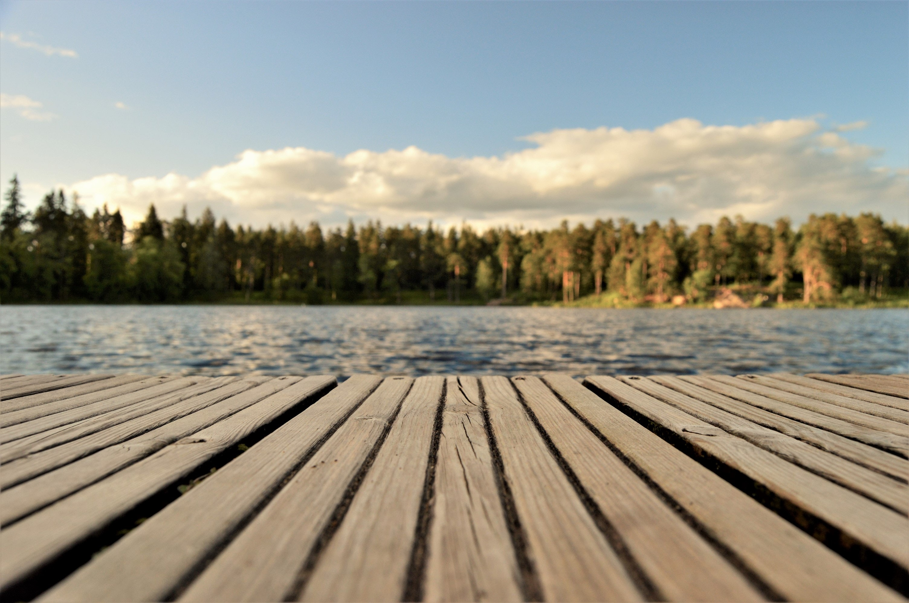

Welcome to Itaska Beach

Hidden Summer Village
Derived from the Cree words ispâskweyâw for "high trees on the edge of the woods."
Itaska Village is a summer getaway place in Alberta, Canada, on the northwest shore of Pigeon Lake, west of Wetaskiwin.
With only a small number of people living in its private properties (30 out of 78), Itaska Beach is the perfect place to spend
your vacation resting and relaxing. From playing in parks, having picnics, hiking on nature trails, swimming, paddling, and yachting on the lake, you'll surely not run
out of fun things to do with your family or by yourself!
The Itaska Yacht Club
For over 55 years, the Itaska Yacht Club has been hosting races at Itaska Beach, where everyone is welcome
to join and participate. This year, the races will begin with the Icebreaker on July 1st, 2022, starting at
10:30 AM and will continue every Sunday until Labor Day. Newcomers are always welcome! You don’t even have to
be a member to join the fun. Non-sailors can help out by volunteering to officiate races or help run safety boats.
For more information, reach out to one of our council members.
The Audubon Society
With the goal of preserving the land’s natural state as a bird sanctuary and nature preserve,
the Itaska Audubon Society was formed in 1976. The forest surrounding the beach is a vibrant environment with
unique ecosystems. By helping preserve the Audubon lands, you help protect the animals living in it.
Come on a trail walk in nature and see animals, do birdwatching or even spot rare species of plants.
For more information on how to protect Itaska’s nature, contact a member of the Audubon Society board.
Itaska Beach Travel Guide
You don't have to go too far in Alberta just to reach Itaska Beach! You will reach
this hidden summer villagein just over an hour of driving . Itaska Beach is located in the vicinity of Leduc County and west of Wetaskiwin. Just north of Pigeon
Lake and surrounded by other summer villages like Golden Days and Sundance Beach, Itaska Beach is surely a perfect place to spend
your summers! For a detailed map of how to get to Itaska Beach, click on this link.